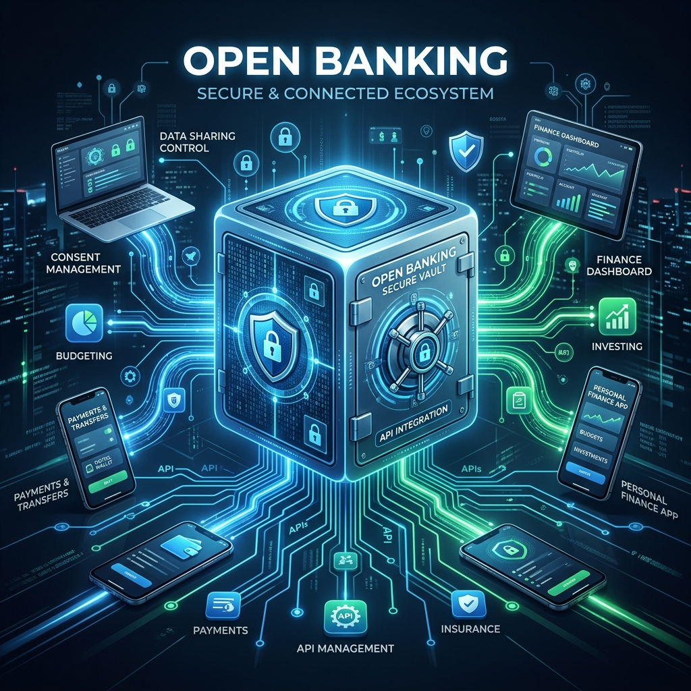

Is 'Open Banking' a security risk or a customer benefit? The debate continues.
Weighing the undeniable convenience of financial APIs against the expanding surface area for cyber threats.

Open banking creates a highly interconnected financial web. But more connections mean more doors to guard.
💡 The benefits of Open Banking are hard to ignore. With APIs that let fintech firms access real‑time account information, customers can apply for loans in minutes rather than weeks, and payment systems become almost instantaneous.
Accenture’s research shows that this openness fuels innovation, pushing traditional banks to rethink product design and compete on features rather than just interest rates. Consumers enjoy clearer insights into their spending, automated budgeting tools, and the ability to bundle services from multiple providers into a single dashboard.
For banks, the data can unlock new revenue streams and improve risk assessment, leading to more accurate credit scoring and targeted offers. The result? A financial ecosystem that feels more responsive, inclusive, and customer‑centric.
The Flip Side: Expanding the Attack Surface
However, the very mechanisms that make Open Banking so powerful—standardised APIs and mandated data sharing—also create new vulnerabilities. When you authorise a third-party budgeting app to access your bank data, you are trusting not just your bank’s security infrastructure, but the app’s as well.
This interconnectedness means that a breach in a small, less secure third-party provider could potentially expose the sensitive financial data of millions of banking customers. Cybercriminals no longer need to breach the digital fortress of a tier-one bank; they just need to find a poorly secured API endpoint in a partnered fintech startup.
Striking the Balance
The solution isn't to retreat from Open Banking, but to mature the security frameworks that surround it. This requires:
- Zero Trust Architecture: Assuming that a breach is inevitable and verifying every single request, even those coming from "trusted" third-party APIs.
- Granular Consent Management: Giving consumers absolute transparency and control over exactly what data they share, with whom, and for how long.
- Continuous API Monitoring: Deploying AI to detect anomalous data exfiltration patterns in real-time.
Open Banking is undeniably a massive leap forward for consumer finance. But the debate isn't truly about whether it's a risk or a benefit—it's both. The real question is whether the financial sector's security protocols can evolve fast enough to ensure the benefits outweigh the risks.